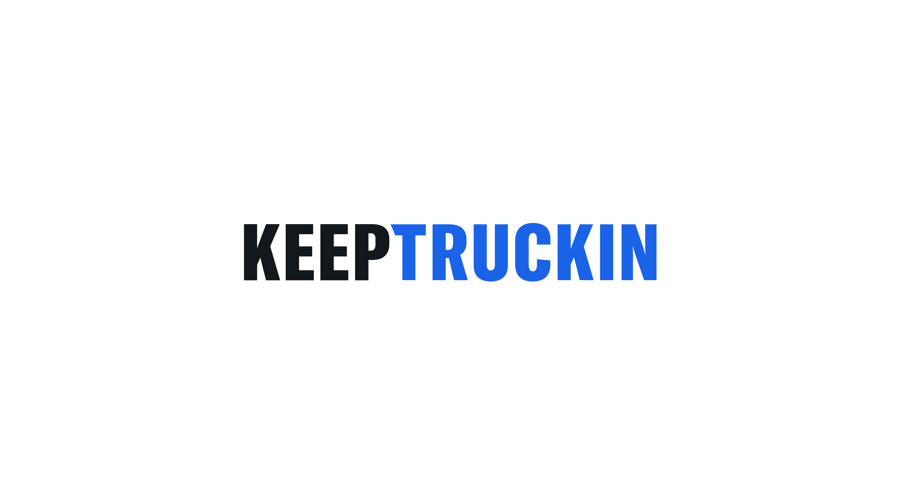
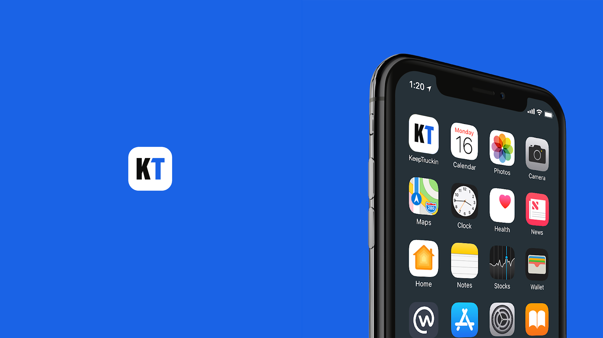

Design & Motion
Art Direction
Brand Applications
KeepTruckin is a fleet management platform serving over a million drivers. The work spanned brand identity applications and motion design, requiring a visual system that felt dynamic and purposeful across digital contexts.
Working alongside a cross-disciplinary team, the project covered static identity applications, motion design, and digital production building a system as fast-moving as the platform itself.

